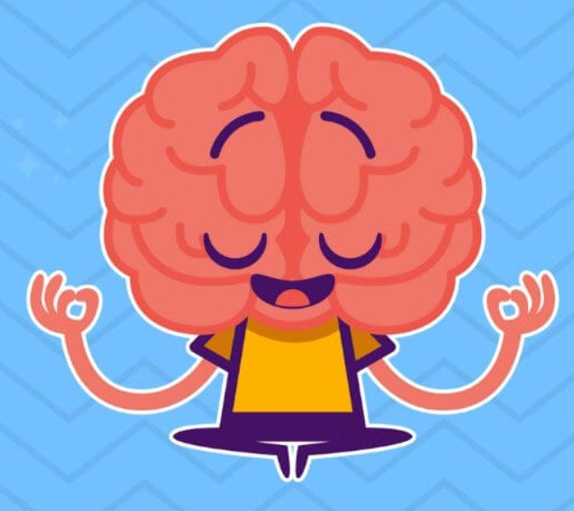
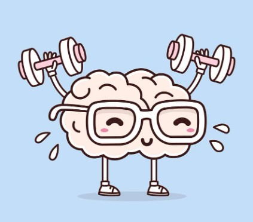
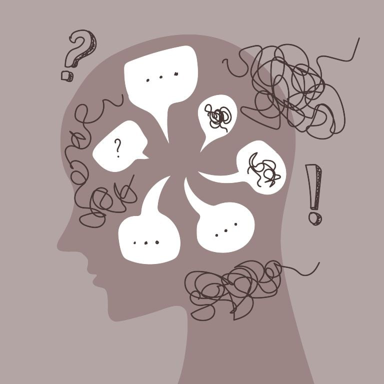
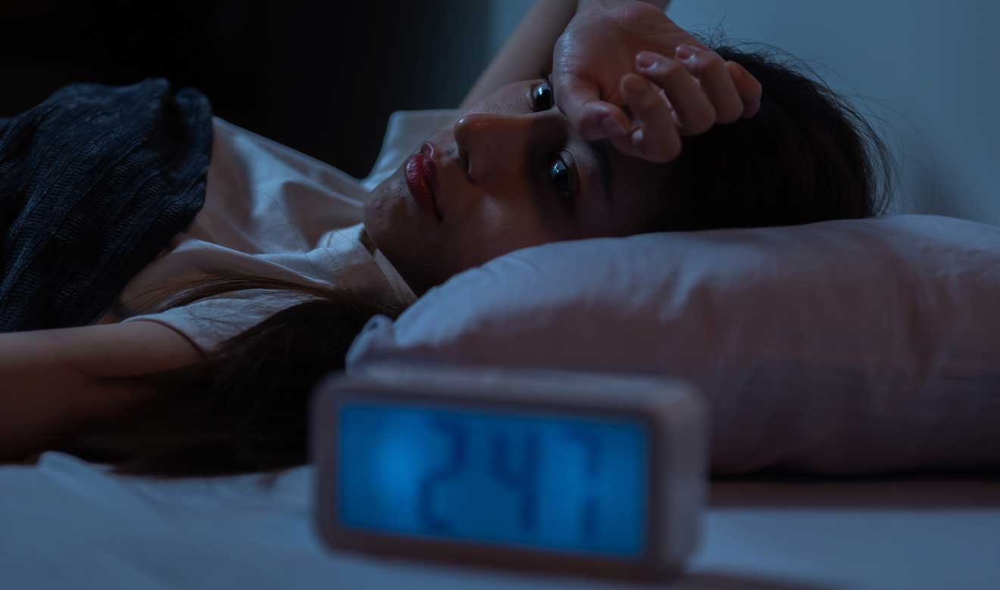

Mental Rest
The Mental Rest
Mental rest is a state of calm and relaxation that allows the brain to recover from the exhaustion caused by constant cognitive activities such as thinking, planning, or worrying.
It consists of taking breaks to silence the "mental noise", disconnecting from external demands, and reducing stress.
Practices such as meditation, taking short breaks, disconnecting from screens, or keeping a journal can help achieve it.
Characteristics and benefits of mental rest
- Cognitive recovery: Allows the brain to recover from continuous information processing and take a break from concentration and decision-making.
- Stress reduction: Helps release accumulated tension and reduce stress and anxiety caused by daily worries.
- Improved creativity: When resting, the mind can find inspiration and new solutions, especially after a period of intense preparation or mental exhaustion, according to the Graham Wallas model.
- Increased productivity: Taking breaks helps improve concentration and long-term productivity, preventing burnout.
- Greater clarity: Promotes mental clarity, allowing for better perspective in work and life.
How to practice mental rest?
- Take active breaks: Take short pauses throughout the day, switch from exhausting tasks to simpler ones like folding clothes, or go for a walk.
- Disconnect from screens: Avoid using electronic devices, especially before sleeping, to reduce information overload and stress.
- Practice mindfulness: Spend a few minutes meditating or doing deep breathing to focus your attention on the present and bodily sensations.
- Keep a journal: Writing down your thoughts can help you externalize them and give your mind a chance to relax.
- Look for pleasurable activities: Engage in hobbies that allow your mind to “wander” and that you find relaxing, such as completing a puzzle.
Mental rest in teenagers is essential for their physical and mental health.
It is mainly achieved by ensuring 8 to 10 hours of nighttime sleep
and maintaining healthy routines.
It is recommended to set regular sleep schedules, avoid electronic devices and caffeine before sleeping,
and encourage daily physical activity and relaxation.

Types of Mental Rest
The types of mental rest include active and passive mental rest,
achieved through breaks, meditation, mindfulness practice,
technological disconnection, and reducing sensory overload.
For complete rest, other types are also recommended such as physical (sleep),
creative (hobbies), social (spending time with loved ones),
and spiritual (gratitude or connection with nature).
Active and Passive Mental Rest
- Active: Engage in hobbies such as drawing, reading, writing, or listening to music to stimulate the mind in a pleasant way.
- Passive: Take short breaks during the day, practice deep breathing, meditate, or let the mind wander through relaxing activities such as enjoying the outdoors.
Sensory Overload Rest
- Limit exposure to screens and noise to reduce visual and auditory fatigue.
- Create a calm environment that is uncluttered to allow the senses to relax.
Rest from Constant Stimulation
- Disconnect from work or school to avoid the buildup of mental stress.
- Put away electronic devices at least one hour before sleeping.
Other Types of Rest for Overall Well-Being
- Physical rest: Getting enough sleep, taking naps, exercising, stretching, or receiving massages.
- Creative rest: Doing activities that nurture inspiration such as art, music, or connecting with nature.
- Social rest: Spending time with people who provide positive energy and limiting contact with those who drain it.
- Spiritual rest: Meditating, practicing gratitude, or connecting with a meaningful purpose or with nature.
Benefits of Mental Rest
Mental rest benefits mental health by reducing stress, improving mood,
and increasing mental clarity and concentration. It also provides physical benefits such as better
cognitive functioning, memory consolidation, metabolism regulation, and reduced inflammation.
Additionally, it helps prevent physical and emotional exhaustion associated with the burnout syndrome.

Benefits for Mental and Cognitive Health
- Reduces stress: Allows the brain to recover and process daily experiences, decreasing stress levels.
- Improves mood: Contributes to a more positive mental state and better relationships with others.
- Increases concentration and clarity: Helps you think more clearly, focus better, and make more effective decisions.
- Strengthens memory: Supports the consolidation and processing of memories, which is crucial for long-term memory.
Physical Benefits
- Improves metabolism: Adequate rest can positively influence its functioning, reducing the risk of diseases.
- Reduces inflammation: Getting enough sleep is linked to decreased inflammation in the body.
- Prevents exhaustion: Reduces the likelihood of developing burnout, characterized by extreme fatigue and lack of motivation.
How to Incorporate Mental Rest
- Schedule breaks: Include short, regular pauses during mentally demanding activities.
- Switch tasks: Alternate challenging tasks with simpler ones like folding clothes or solving a puzzle.
- Write in a journal: Writing down thoughts helps “unload” the mind and reduce overthinking.
- Practice mindfulness: Meditation or focusing on physical sensations to calm the mind.
- Disconnect from stimuli: Close your eyes, avoid bright screens, or step away from electronic devices to give your nervous system a break.
Techniques to Rest the Mind
To rest the mind, you can use relaxation techniques such as deep breathing and meditation,
focused on mindfulness and calmness.
Other helpful activities include physical exercise (yoga or tai chi), free writing to release thoughts,
and sensory-based practices like aromatherapy, music therapy, or artistic activities such as painting.
Physical and Mental Relaxation Techniques
- Deep breathing: Sit or lie down, place one hand on your stomach and the other on your chest.
Inhale slowly through your nose until you feel your stomach rise, hold your breath for a moment, and exhale slowly as you feel it lower.
- Meditation: Reduces stress and self-criticism. You can start with guided meditations or mindfulness to focus your attention on the present and calm your mind.
- Yoga and Tai Chi: Both practices combine gentle movements with deep breathing to increase body awareness and release anxiety.
- Progressive muscle relaxation: Tense and then relax different muscle groups, starting from the feet and moving up to the head.
- Free writing: Spend a few minutes writing whatever comes to mind without judging or organizing. The goal is to release accumulated thoughts.
- Visualization exercises: Imagine relaxing places or situations: a white wall, a natural landscape, or a happy memory.
- Grounding: Walk barefoot on soil or grass for a few minutes to connect with the present and with nature.

Other Techniques
- Creative activities: Painting, drawing, or listening to music can relax the mind and reduce stress.
- Warm baths or massages: Help relax both the body and the mind.
- Aromatherapy: Use essential oils like lavender to create a calming environment.
- Short breaks: Throughout the day, take two-minute breaks to observe your breathing or simply look around without using your phone.
- Organize your thoughts: Once a week, set aside time to organize your tasks to “unload” your mind and be more present.
Effects of Stress on the Mind
Stress affects the mind by interfering with cognitive functions such as concentration,
memory, and decision-making.
It can also lead to mental health issues like anxiety and depression.
Chronic stress disrupts executive functions of the brain, affects mood, and alters sleep patterns.

Impacts of Stress on the Mind
- Cognitive function: Makes concentration, working memory, and decision-making more difficult, creating a sense of "mental block".
- Mental health: Contributes to the development of disorders such as anxiety and depression.
- Emotional regulation: Increases irritability, bad mood, and reduces patience.
- Brain health: Chronic stress affects mental flexibility, creativity, and the areas of the brain responsible for memory and learning.
- Sleep: Makes it harder to fall asleep and maintain restful sleep, which worsens mood and thinking.
How Stress Affects the Brain
- Stress activates an alarm system in the brain, releasing hormones such as cortisol.
- Cortisol affects the hippocampus, a key area for memory, and the prefrontal cortex, responsible for executive functions like planning and concentration.
- When stress becomes chronic, these hormones damage neurons and reduce the brain’s ability to adapt, thus affecting cognitive functions.

Mental Rest in Teenagers
Mental rest in teenagers is essential for their physical and mental health.
It is mainly achieved by ensuring 8 to 10 hours of nighttime sleep
and maintaining healthy routines.
It is recommended to establish regular sleep schedules, avoid electronic devices and caffeine before bedtime,
and promote physical activity and daily relaxation.
Strategies for Mental Rest
Sleep
- Duration: Sleep between 8 and 10 hours per night to support the rapid development of the body and brain.
- Routine: Set regular times to go to bed and wake up every day, even on weekends.
- Environment: Create a suitable environment: dark, cool, and quiet room.
- Disconnection: Avoid screens at least one hour before sleeping. Blue light stimulates the mind and makes it harder to fall asleep. It is recommended to charge the phone outside the room.
Lifestyle
- Physical activity: Stay active during the day, avoiding intense exercise close to bedtime.
- Nutrition: Avoid caffeine in the afternoon or evening (coffee, tea, soda, and chocolate).
Routine and Relaxation
- Mental disconnection: Create a nighttime relaxation ritual such as a warm bath, reading, or calming music.
- Time management: Organize schedules that include recreation and rest time to reduce stress and avoid academic overload.
Benefits of Mental Rest
- Improves academic performance.
- Reduces irritability, anxiety, and other emotional problems.
- Strengthens the ability to relate to others.
- Long-term health: Helps maintain a healthy weight, protects cardiovascular health, and improves cognitive function.
Family and Professional Support
- Family support: Encourage an environment of dialogue, understanding, and emotional support.
- Professional help: If there are mental health issues or significant stress, it is important to see psychologists or psychiatrists, just as essential as going to a doctor for a physical problem.
Send Me Your Review
If you want to share your opinion, suggestions or thoughts, you can send me a review using this form: